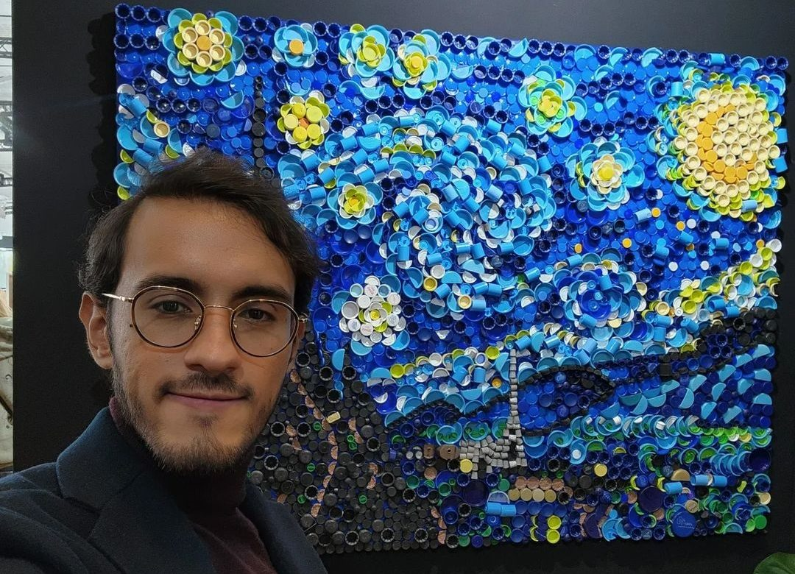
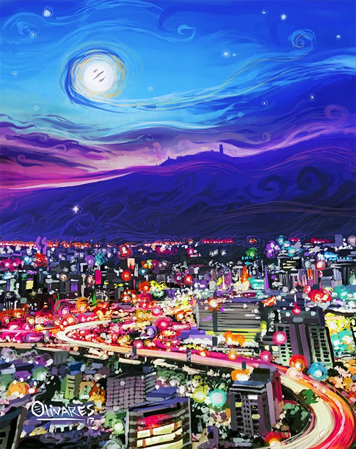
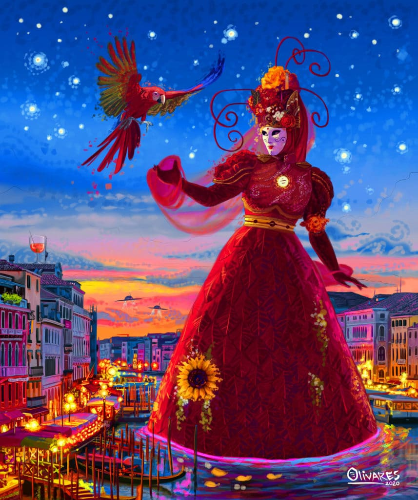
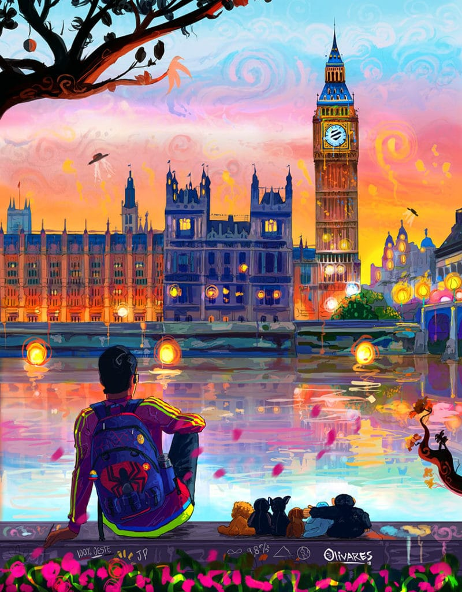
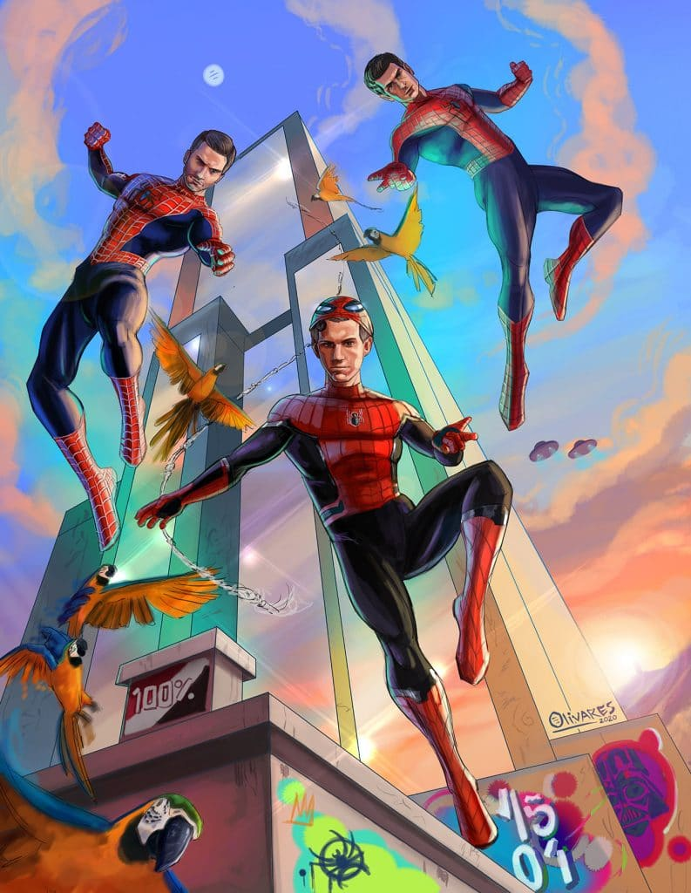
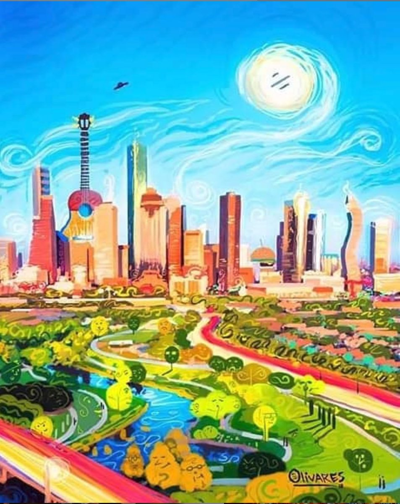
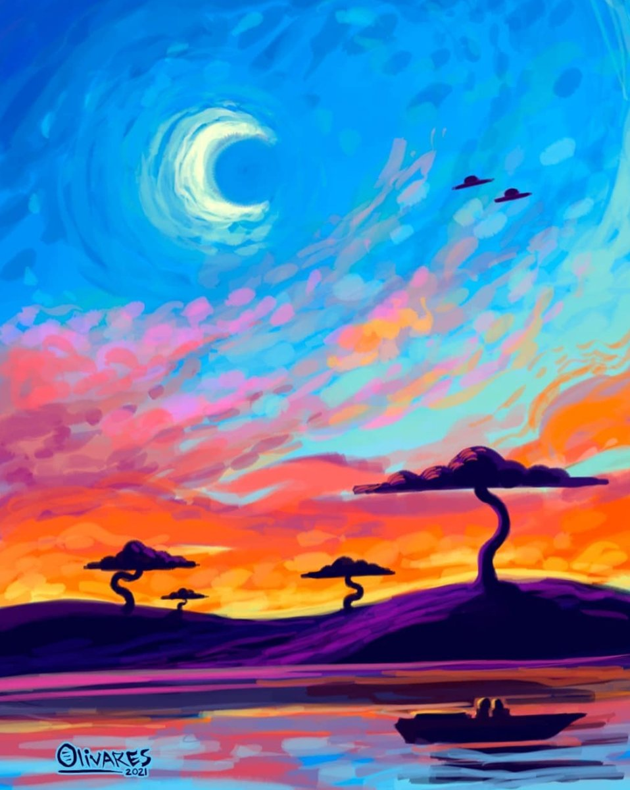

Óscar Olivares
El artista venezolano que llevó sus obras con material reciclable al Museo Louvre en París
El artista venezolano, Óscar Olivares, llegó a la Feria de Arte del Carrousel del Louvre en París, Francia, donde participa desde el viernes con la exposición de sus obras hechas con plástico reciclado de Venezuela.
¡Me enorgullece anunciar que del 21 al 23 de octubre estaré exponiendo en la Feria de Arte del Carrousel del Louvre en París, Francia! Este espacio conecta con el Museo del Louvre. Será 1era vez que se expone, en Europa, una obra hecha con plástico reciclado en Venezuela”, escribió Olivares en su Twitter.

Óscar Olivares representa la venezolanidad en cada una de sus obras
“Hay quienes me dicen ‘Oye, ¿qué serías si no fueses artista?’… No sería yo, así de sencillo. Sería otra persona con otros propósitos y otras metas.”
Óscar Olivares es un joven motivado, su voz de conferencista se hace tan fuerte hasta en su arte. Como artista visual, Óscar busca crear expresiones de sí mismo, para él es fundamental vivir de forma genuina y que ese sea el color que pueda teñir sus trabajos. Sus obras han alcanzado grandes ciudades: Miami, Bogotá, Houston, Panamá, Denver, Madrid, Barcelona, Roma, Pescara, Santo Domingo y Kuala Lumpur (Malasia). Ha asistido a eventos internacionales como el ArtExpo New York, Passion for Freedom Art Festival de Londres y la Florida Supercon. Su arte se volvió conocido gracias al fútbol nacional, su inspiración surgió en el estadio olímpico de la UCV de Caracas, que también es su lugar favorito. Ahí vivió muchas emociones, descubrió la pasión y su impulso para crear. Hasta ahora, ha logrado el Premio Iberoamericano de Emprendimiento Online 2015 y el Premio Mara de Oro 2017.
Nació en septiembre de 1996, en Caracas, donde aún Óscar Olivares reside. Su plato favorito es la arepa, por eso es parte de todas sus obras representando la luz. Utiliza esta figura emblemática porque “es capaz de unir al rico y al pobre en la misma mesa, une todas las diferencias del venezolano”. Es un símbolo de su deseo por demostrar que muchas personas se pueden unir a través del arte. Sus mismos orígenes le dan la identidad, se considera apasionado por el arte. Óscar busca con cada una de sus creaciones elevar el espíritu humano y siempre tener una visión espiritual desde la luz de cualquier situación que se presenta en la vida. “Es un joven que siempre se ha enfocado en lo que está en sus manos para crear oportunidades y éxito.”





